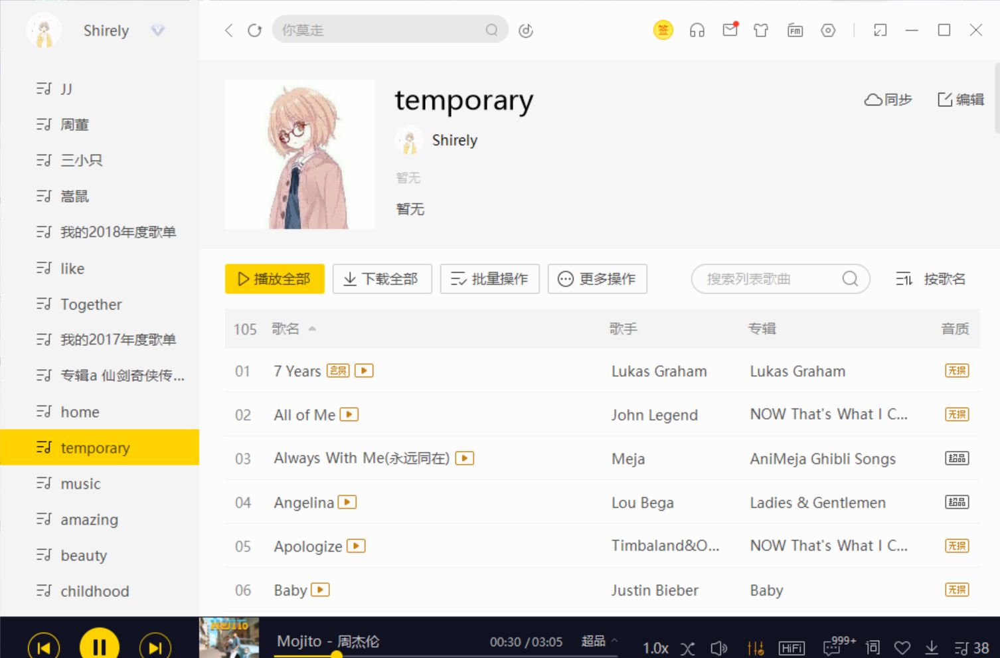
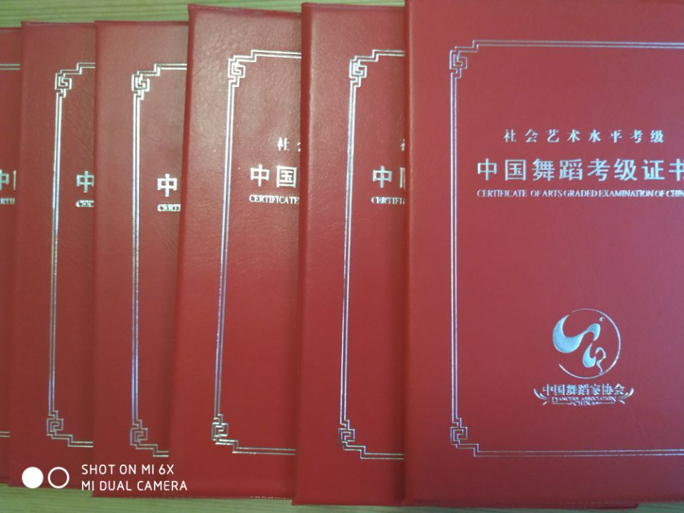
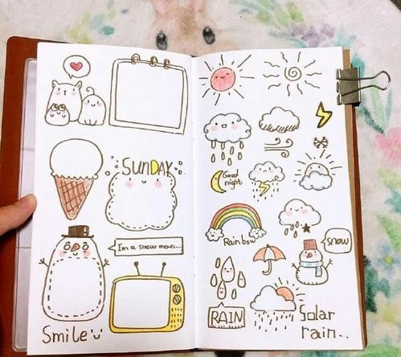

万里挑一的小仙女

听音乐
- 很喜欢听歌哦，最喜欢用的听歌软件就是酷我音乐啦！
- 在酷我音乐，有足足24个自建歌单哦，仅仅是temporary歌单里就有105首歌呢。
- 这些都像是我的宝贝，每首单曲循环过的歌曲都记录着我当时的生活和心情。
- 偶尔回去听听当时的歌，总能会想起当时的心情。
- 从幼时流行的《日不落》、《千方百计》等等歌曲开始，渐渐有了抄写歌词的习惯。
- 高中陪伴三年的学校起床铃声《远走高飞》，高三时陪我度过刷题夜晚的《起风了》
- 大一刚刚入校时单曲循环的《追光者》，都饱含这我珍藏的记忆。
- 虽然我不懂乐理，不会自己写歌，但是仍然用歌曲记录着生活。

跳舞
- 从幼儿园便开始学习民族舞，一直学习了十二年之久。
- 直到初中时，为了把更多时间放在学业上，不得已而放弃了这个幼时的最爱。
- 从压腿，到下腰；从对着镜子练习，到站上舞台翩翩起舞。
- 享受过舞台的灯光、鲜花和掌声。
- 看着小时候考下的这些证书，也不时想起幼时的梦想。
- 现在我依旧喜欢四面都是镜子，木制地板的房间。因为会让我想起那时咬牙坚持的自己。
- 说不定之后还会去跳舞呢，我依旧这么想着。

写手帐
- 从大学开始，喜欢上了另一种写日记的方式，记手账。
- 日记本上也从单调的黑白色变成了现在的彩虹色。
- 有时记录一些生活中的趣事，再翻看时仍旧不自禁的笑起来。
- 有时记录一些烦恼，仿佛写在手账上，就不会一直存在脑海中一般。
- 期末的时候，也会写一写复习计划，安排自己的时间。
- 已经写完满满两本啦，那些愉快的不愉快的回忆都变成了彩虹色呢。